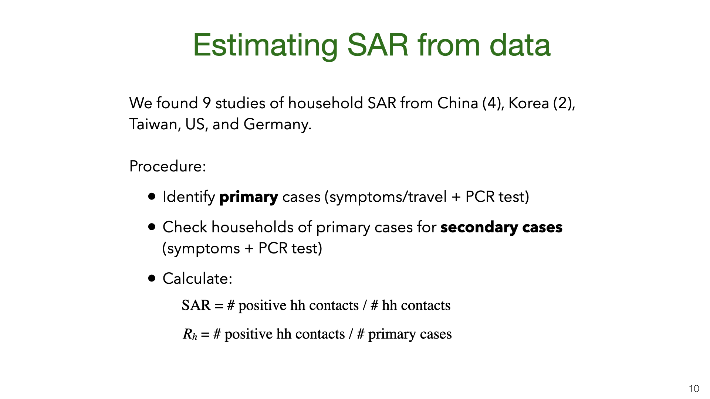

Owain Evans (+ Mihaela Curmei, Andrew Illyas, Jacob Steinhardt)
Overview
If someone in your household gets COVID-19, how likely are you to get infected? Is it possible to reduce this risk with interventions? How much of all transmission is between members of the same household? Is household transmission less bad because infections in the household don’t spread to the outside?
Our paper addresses these questions and these slides provide an informal and visual presentation of the paper. We show how to adjust previous estimates of household transmission to correct for inaccurate testing. We pool existing data using a Bayesian meta-analysis and estimate the chance of being infected by an infected household member as 30% (95% CI 18%-43%). This probability is heterogeneous across studies, with an SD of 15% (9%-27%). Household transmission was likely a small fraction of \(R\) before social distancing (5%-35%) but a large fraction (30%-55%) after. Observational studies suggest household transmission can be reduced with behavioral interventions. It is uncertain how much infections in households spread to the outside, but we show this is related to the effectiveness of contact tracing.
Lockdowns and social distancing reduce close contacts outside the household. But contact within the household is either unchanged or increases. Reducing transmission within households has the potential to further reduce spread. We estimate the magnitude of household transmission and consider whether it can be reduced. Since essential workers still have more contacts outside the household, we also consider policies targeting them.
2. Formalizing Household Transmission
We consider two main ways of quantifying household transmission. The first is the intra-household effective reproductive number \(R_h\). This is defined by decomposing the familiar \(R\) number (the effective reproductive number) into a sum of community and intra-household reproductive numbers. These reproductive numbers will change over time due to behavioral interventions and reduced susceptibility but we omit the subscripts and write \(R\) instead of \(R_t\).
\(R_h\) depends on (a) how likely people are to infect individual household members and (b) how large households are. The household secondary attack rate (SAR) depends on (a) and is (roughly) independent of (b). The SAR varies depending on the age of \(i\) and \(j\) and the relationship (spouses vs. housemates). Jing et al. [1] found the probability of infection for children was 26% of the probability for over 60s. Variation between adults of different ages is smaller. For our purposes, the SAR is an average over the SARs for different pairs of age groups. The SAR will also vary over time if people implement NPIs within the home, as we discuss below. Note that \(i \rightarrow j\) means that \(i\) infects \(j\).
This diagram illustrates \(R\), \(R_h\), and SAR. At time \(t\), there is a set of primary cases who are infected. They each have a set of contacts and some of those become infected at time \(t+1\). Infected contacts are shown in red. Household members of primary cases have a blue box around them. The topmost primary case has two household members and infects \(1/3\) of them. The middle primary case has one household member and doesn’t infect them, and the bottom primary case has no household members. To compute \(R_h\), we look at the red nodes in blue boxes (positive cases) and do not consider negative cases. Here \(R_h = 1/3\). To compute the SAR we look at the ratio of red to white nodes in blue boxes. Here SAR \(= 1/4\).
The household reproductive number \(R_h\) depends on the SAR and average household size. In places with bigger households, we expect \(R_h\) to be higher. We depict SAR as independent of household size. In fact, SAR probably decreases for bigger households. But given that most household sizes lie in a small range these decreases will be small. \(R_h\) also depends on population prevalence and \(R_c\) but we expect \(R_h\) not to vary much as a function of plausible variation in these parameters.
We can approximate \(R_h\) as a function of SAR and the mean household size \(H\). There are two cases. If \(i\) is infected outside the household then (assuming low prevalence), the rest of the household is susceptible. In expectation, \(i\) infects \(s(H-1) = 1.5s\) people. If \(i\) is infected inside the household, then there’s already two people infected (\(i\) and whoever infected \(i\)). The remaining household members might also have gotten infected by \(i\)’s infector. Ignoring subtle differences in SAR due to variation in household size, we get a bound on the number of new infections: \(s(1-s)(H-2) < 0.125\).
What is the probability of Case 1 vs Case 2? Assuming \(R_c\) and \(R_h\) are not changing fast, they will be approximately constant during one generation. So the probability \(i\) is infected in the community is \(R_c/(R_c+R_h)\). We can set up a similar equation for \(R_c\) (not shown here) and then solve for \(R_h\) given a value for SAR and \(R_c\). Some results of doing this are shown in the graph, which assumes SAR=0.2. When there’s almost no community transmission, \(R_h\) is low (Case 2) but grows quickly as Case 1 comes to dominate. (In practice, if there’s almost no community transmission then the virus will burn out because households are mostly small in size, e.g. less than 10 people.)
We introduce a third way to measure household transmission: CRI. Like the SAR and \(R_h\), this has appeared in the literature (e.g. Streeck et al. [2]) but not under this name. This is the probability that a specific person \(j\) is infected given that their household member \(i\) is infected. We don’t assume \(i\) was infected first. So CRI is consistent with \(i\) infecting \(j\) or vice versa or a third person infecting both of them.
3. Results for Quantifying Household Transmission
 We did a comprehensive search for studies where they estimate the SAR from empirical data. Most studies are from East Asia. The German and US studies ([3], [4]) have very small \(n\). The data for these studies comes from government contact tracing. First, a cohort of primary cases is identified (e.g. by testing people with symptoms or travel history). Then contact tracers check the households of the primary cases for secondary infection. The resulting data allows for estimates of the SAR and \(R_h\).
There are sources of bias in the estimates. An example of problem (3) is that two family members might have been infected from the same source (rather than one member infecting the other). We think this is unlikely to be a large source of bias. Some studies used the temporal ordering of cases to try to infer who infected whom.
Some proportion of infected people have either no symptoms or symptoms they don’t recognize as Covid-19. Studies ([2], [5]) find a wide range of numbers for the “Asymptomatic Rate” (AR). Some of this variation may be due to AR varying with age [6]: there are likely more asymptomatics under 15 vs over 65. There is also variation because “asymptomatic” is defined differently in different studies. In a study of hospital workers in Cambridge (UK), the asymptomatic group included both people with no symptoms and those with symptoms so mild that the workers assumed they could continue working.
Asymptomatics may be less infectious than symptomatics. However, the ratio is unknown. There is some evidence of asymptomatic infection (e.g. in the study of Vo’, Italy) and so it’s unlikely to be 0%. For discussion, see this paper on modeling the contribution of asymptomatic to infections on the Diamond Princess.
PCR testing has a high false-negative rate (or low sensitivity). These graphs come from Kucirka et al [7]. We see that on the first few days after being infected, someone was unlikely to test positive. During the 10 days after typical symptom onset (Days 5-15) the mean false-negative rate is still more than 17% (with different papers giving different estimates [8]). The bottom graph shows the posterior probability that someone is infected given a positive test and a base rate of around 10%. There is evidence that accuracy varies across labs. We don’t have calibration data for the SAR studies that figured in our meta-analysis. However, we think it’s plausible that the SAR studies were subject to these high false-negative rates.
We did a Bayesian meta-analysis of the nine SAR studies [1], [3], [4], [9]–[14]. The model corrects the original estimates of SAR for false negatives (for all studies) and for the failure to test asymptomatics (in some studies). In the model, the household SAR (denoted \(SAR_i\)) for study \(i\) is generated from a Beta distribution with a flat (improper) prior on its parameters. The precise false-negative rate \(FNR_i\) and asymptomatic rate \(AR\) are unknown and so we sample them from priors based on existing estimates. This model allows us to estimate heterogeneity in SAR across studies and to pool data. For each study, we used the counts (number of contacts and number testing positive) given in the paper.
We used MCMC for inference. The results show that correcting for false negatives and asymptomatics has a substantial effect: the mean SAR estimate increased from 20% to 30% (second to last row). It’s also clear that SAR is heterogeneous across studies, with some 95% credible intervals not overlapping. Part of this heterogeneity is likely due to false negatives and asymptomatics (which we model but do not observe for each study). Another source of heterogeneity is the actions taken by households in different locations. There is evidence that early isolation of symptomatic family members and PPE used at home can reduce SAR (see later slide).
Our results are quite uncertain. The 95% credible interval around the mean for the SAR distribution is 18%-43%. Having a better estimate for the prior on false-negative rates and the asymptomatic rate would lead to more accurate estimates of SAR. We do not adjust for lack of asymptomatics among primary cases. My guess is that asymptomatics are under-sampled and that they are less infectious. (At the same time, their lack of symptoms means that household members will not take any precautions). Adjusting for lack of asymptomatics will revise the SAR estimate down, but probably not by a large amount. Future work (drawing on better studies on false-negatives, asymptomatics, NPIs that reduce SAR) could put all these together and more accurately model the SAR.
The data and model we used to estimate the SAR can also be used to estimate the household reproductive number \(R_h\).
We might be concerned that the studies of East Asia are not representative of the rest of the world. China, South Korea and Taiwan all had very low transmission in total (outside of Wuhan in January). So maybe the SAR in these countries is lower than in Europe or the US. Another issue (raised above) is the lack of asymptomatics among primary or secondary cases.
There have been two studies in Europe that provide information about household transmission. Vo’ (in Veneto) was the site of the first death in Italy. It’s likely many residents were infected after patronizing the bar shown here. Lavezzo et al. [5] tested a large proportion of the residents of the town in two rounds of PCR testing (just before and two weeks after lockdown). Gangelt is a town in Germany which was the site of a superspreader event connected with the carnival shown here. Streeck et al. [2] tested a large random sample of households using antibody tests. In both Vo’ and Gangelt, many of those testing positive were asymptomatic. (Another population study that gives some information about the extent of household transmission was done in Iceland.)
How do the results for Vo’ and Gangelt compare to the estimates of the SAR and \(R_h\)? We used the data from Lavezzo et al. [5] and Streeck et al. [2] to calculate the numbers in the table. We cannot estimate the SAR because the data only includes how many people in each household tested positive and negative (not who infected whom). Instead, we can compute the CRI and then compare this to a predicted CRI given a SAR of 30%.
How do we compute this CRI prediction? The CRI \(= P(j \texttt{ is infected} | i \texttt{ is infected})\). Person \(i\) was either infected outside or inside the household. Let’s simplify and assume there are two possibilities: \(i\) infected outside (and might infect \(j\)) or \(j\) infected outside and infects \(i\). Then by Bayes Rule, we find CRI \(= 2\texttt{SAR}/(1+\texttt{SAR}) = 0.46\). However, it’s also possible a third member \(k\) infected \(i\), and including this possibility reduces the predicted CRI (see last row in table).
This prediction for CRI is fairly close to the values for Gangelt and Vo’. We would not expect a precise match. First, there is likely heterogeneity due to testing accuracy. Second, there are higher base rates of infection in Vo’ and Gangelt than in nearly all East Asian locations. Third, there is variation in age and household size.
Still, suppose SAR were 5% or 70%, then CRI would be roughly 0.10 or 0.82 respectively. So our estimates for CRI would rule out these small/large SAR values. This suggests that the SAR is not so different in Europe and that the shortcomings of the SAR studies (regarding asymptomatics and false negatives) don’t cause a large distortion. This informal consilience argument could be formalized and this is a good topic for future research.
We can compare our estimate for the household SAR of SARS-CoV-2 to other related viruses. The SAR is correlated with the reproductive number \(R_0\). The \(R_0\) numbers are taken from Wikipedia. SAR estimates taken from these papers.
4. Household vs. Total Transmission
We’ve estimated the absolute quantity of household transmission. How does it relate to overall transmission? We used an overdispersed Poisson model fit to death data to estimate the growth rate and translate into \(R\) using the generation time distribution estimated by Ferretti et al [15]. We do this for US states and a variety of countries, and compare \(R\) estimates before and after lockdown.
We don’t have data on \(R_h\) for US states, but we approximate it using the value \(R_h=0.3\) pre-lockdown based on our earlier results. The main result here is that \(R_h\) is a small fraction of \(R\) before lockdown but 25-60% of \(R\) during lockdown. There is some evidence from New York hospitalization post-lockdown that fits this picture, but more data is needed.
We also estimated \(R_h\) and \(R\) based on Singapore’s contact tracing data. You can see a snapshot of their contact tracing graph here. The dataset we created from the Singapore data is released here.
These are daily aggregate estimates of \(R\) and household reproduction number \(R_h\) in Singapore based on contact tracing data. We observe that in early phases of the epidemic \(R\) was greater than 1. With increased public awareness and contact tracing efforts \(R\) decreased steadily through March 15th. Throughout this time household transmission stayed constant, with \(R_h\) values in the 0.2 – 0.3 range. The ratio of infections attributable to household transmission decreased sharply at the end of March due to large outbreaks in migrant worker dormitories. These are not counted as households but do involve multiple workers sharing rooms.
What are the policy implications of our estimates of household transmission? There is evidence that the public overestimates \(R\) and so likely overestimates the household SAR. It’s plausible that if people knew that household transmission was relatively unlikely, they’d be more likely to take steps to avoid it (Akesson et al. and Fetzer et al. [16], [17]).
5. Household Transmission: Inevitable? Contained to House?
Our results show that SAR varies a lot between experiments. Some of this variation is probably explained by NPIs (non-pharmaceutical interventions) taken by households to reduce transmission. However, for most studies we don’t have information about NPIs. There are two exceptions. Both are observational studies with fairly small \(n\), and so this is not watertight evidence. Each study suggests that avoiding contact with the primary case and using standard NPIs (masks and disinfectant cleaning of surfaces) reduce the SAR. We think it’s likely that other standard NPIs also reduce SAR: e.g. having close contact outdoors vs indoors, hand hygiene, and so on.
A New York Times piece [18] about household transmission in Italy suggests that top scientific advisors in Italy believed that household transmission is less bad because infections stay “contained” within the household. Concretely, the question is whether someone infected at home is less likely to infect someone outside the home (vs someone infected in the community). If so, household transmission would be bad in itself (as the infected person might die) but would be less valuable to avoid than community transmission in terms of follow-on effects on \(R\).
We can formalize the theory of “household containment” by introducing community reproduction numbers for people infected at home \(R_{c|h}\) and in the community \(R_{c|c}\) respectively. We did not find a dataset which would allow us to answer this question empirically. This would require a large and well annotated contact tracing dataset. (Our Singapore dataset is not sufficient). In lieu of a direct empirical estimate, we consider a simple a priori analysis.
Why should people infected at home cause fewer community infections than those infected in the community? First, the “infected-at-home” group is demographically different (e.g. it likely includes more children because children don’t live alone) and this may impact transmission rates. Second, the infected-at-home group will likely observe early that their household member is infected and so know that they should quarantine. This is equivalent to perfect contact tracing. For people infected in the community, contact tracing will be slower and will miss more contacts. Still, even with perfect contact tracing, it’s possible for people infected at home to become infectious before their infector is symptomatic (Ferretti et al. [15]). And people infected at home may break quarantine rules. Overall, we expect that in the US and Europe for the forthcoming months, \(R_{c|h} < R_{c|c}\). This is because contact tracing is far from perfect and compliance with quarantine will be reasonably high. However, more empirical data is needed to narrow down the estimate.
6. Transmission and Contact Under Lockdown
We shift gears from household transmission to transmission in the community under social distancing. Prior work in epidemiology has used contact matrices to model transmission of infectious diseases. This is an example from a recent paper [14] that estimated contact between different age groups in Wuhan and Shanghai before and after the lockdowns in early 2020. We see in the left matrix that school children have a high number of contacts of the same age (because of mixing at school). After the lockdown, school children had almost no contacts other the same age. This is presumably because most are only children and so just had contact with their parents. The contact data comes from surveys rather than direct measures of contact.
This is the same kind of data for the UK but split up into different locations for contact (Jarvis et al. [19]).
If the secondary attack rate is constant across the different groups in the matrix, then the entries in contact matrix \(C\) are proportional to group-group reproductive numbers. If \(v\) is a vector of the number of infections in each group, then \(Mv\) will compute the next generation of infections (up to multiplication by the SAR). The reproductive number \(R\) is then proportional to the dominant eigenvalue of \(C\). This is similar to the PageRank algorithm.
Note that the secondary attack rate is not actually constant across these groups. The SAR is 20-40% for household members but likely much lower for work or school contacts [6]. So the estimate of \(R\) here is approximate.
Strict lockdowns partition the population into two groups, essential workers (who continue to have community contacts) and everyone else (who mostly just have household contacts). We consider essential workers to be “high contact” (HC) and everyone else to be “low contact” (LC) and estimate the contact matrix from US survey data (Gallup). We then compute the change in \(R\) assuming a reduction of contact between groups of 10%. The chart shows that \(R\) is reduced 8x more by reducing HC-HC contact than other kinds of contact. This means that even if HC people are only 20% of the population, they would be a better target for interventions than other groups.
In practice, we expect the difference between essential workers and everyone else is smaller. First, because essential worker contact at work is often lower risk than social contact. Second, because some proportion of people (>5%) will ignore social distancing laws in a way that surveys don’t fully capture.
7. Conclusions and Open Questions
Mostly unrelated to this paper, these are some other important areas for future research.
How does spread work in practice?
kind of contact; droplets vs. fomites
indoors vs outdoors, duration of contact.
family house vs. apartments vs. dormitory.
superspreaders and overdispersion, can we predict who is a superspreader?
NPIs: masks and other PPE, distance, hygiene.
how do public’s beliefs influence spread?
consider using data from Singapore, Korea.
need more data from Western countries. E.g. tracing, CCTV, cellphone.
Will the virus mutate into worse or better strain?
How should we update prior on lack of major mutation so far? Even if mutation is unlikely (<4%), impact large.
Better analyze the overall impact of new Covid-19 tech:
sewage testing or other rapid prevalence testing
better symptomatic detection (e.g. use ML or home sensors)
better genetic prediction of infectiousness (e.g. superspreader risk) and severity of infection
treatment that reduces IFR
References
[1] Q.-L. Jing et al., “Household secondary attack rate of covid-19 and associated determinants,” medRxiv, 2020.
[2] H. Streeck et al., “Infection fatality rate of SARS-CoV-2 infection in a German community with a super-spreading event,” 2020.
[3] M. M. Böhmer et al., “Investigation of a covid-19 outbreak in germany resulting from a single travel-associated primary case: A case series,” The Lancet Infectious Diseases, 2020.
[4] R. M. Burke et al., “Active Monitoring of Persons Exposed to Patients with Confirmed COVID-19 – United States, January-February 2020,” Morbidity and Mortality Weekly Report, 2020.
[5] E. Lavezzo et al., “Suppression of covid-19 outbreak in the municipality of Vo and Italy,” 2020.
[6] W. C. Koh et al., “What do we know about sars-cov-2 transmission? A systematic review and meta-analysis of the secondary attack rate, serial interval, and asymptomatic infection,” medRxiv, 2020.
[7] L. Kucirka, S. Lauer, O. Laeyendecker, D. Boon, and J. Lessler, “Variation in false negative rate of rt-pcr based sars-cov-2 tests by time since exposure,” medRxiv, 2020.
[8] P. Wikramaratna, R. S. Paton, M. Ghafari, and J. Lourenco, “Estimating false-negative detection rate of sars-cov-2 by rt-pcr,” medRxiv, 2020.
[9] W. Li et al., “The characteristics of household transmission of COVID-19,” Clinical Infectious Diseases, Apr. 2020.
[10] H.-Y. Cheng, S.-W. Jian, D.-P. Liu, T.-C. Ng, W.-T. Huang, and H.-H. Lin, “Contact tracing assessment of covid-19 transmission dynamics in taiwan and risk at different exposure periods before and after symptom onset,” JAMA Internal Medicine, 2020.
[11] Korea CDC, “Coronavirus disease-19: Summary of 2,370 contact investigations of the first 30 cases in the republic of korea,” Osong public health and research perspectives, vol. 11, no. 2, p. 81—84, 2020.
[12] S. Y. Park et al., “Coronavirus Disease Outbreak in Call Center, South Korea,” Emerging Infectious Diseases, 2020.
[13] Z. Wang, W. Ma, X. Zheng, G. Wu, and R. Zhang, “Household transmission of sars-cov-2,” Journal of Infection, 2020.
[14] J. Zhang et al., “Changes in contact patterns shape the dynamics of the covid-19 outbreak in china,” Science, 2020.
[15] L. Ferretti et al., “Quantifying SARS-CoV-2 transmission suggests epidemic control with digital contact tracing,” Science, 2020.
[16] J. Akesson, S. Ashworth-Hayes, R. Hahn, R. D. Metcalfe, and I. Rasooly, “Fatalism, beliefs, and behaviors during the covid-19 pandemic,” National Bureau of Economic Research, 2020.
[17] T. R. Fetzer et al., “Global behaviors and perceptions at the onset of the covid-19 pandemic,” National Bureau of Economic Research, 2020.
[19] C. I. Jarvis et al., “Quantifying the impact of physical distance measures on the transmission of covid-19 in the uk,” BMC Medicine, vol. 18, no. 1, p. 124, May 2020.
 We did a Bayesian meta-analysis of the nine SAR studies [1], [3], [4], [9]–[14]. The model corrects the original estimates of SAR for false negatives (for all studies) and for the failure to test asymptomatics (in some studies). In the model, the household SAR (denoted \(SAR_i\)) for study \(i\) is generated from a Beta distribution with a flat (improper) prior on its parameters. The precise false-negative rate \(FNR_i\) and asymptomatic rate \(AR\) are unknown and so we sample them from priors based on existing estimates. This model allows us to estimate heterogeneity in SAR across studies and to pool data. For each study, we used the counts (number of contacts and number testing positive) given in the paper.
We did a Bayesian meta-analysis of the nine SAR studies [1], [3], [4], [9]–[14]. The model corrects the original estimates of SAR for false negatives (for all studies) and for the failure to test asymptomatics (in some studies). In the model, the household SAR (denoted \(SAR_i\)) for study \(i\) is generated from a Beta distribution with a flat (improper) prior on its parameters. The precise false-negative rate \(FNR_i\) and asymptomatic rate \(AR\) are unknown and so we sample them from priors based on existing estimates. This model allows us to estimate heterogeneity in SAR across studies and to pool data. For each study, we used the counts (number of contacts and number testing positive) given in the paper.